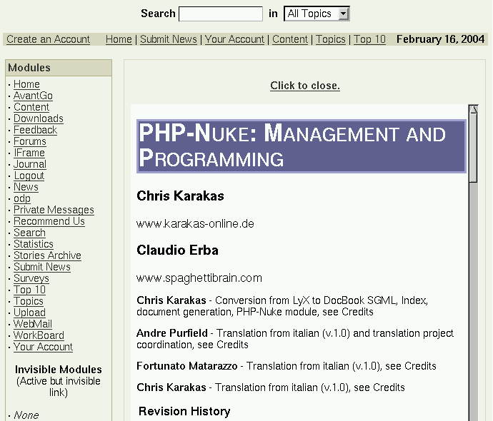

21.7. How to include a HTML file and its links using an iframe in a PHP-Nuke module
You can also use an iframe to include an external HTML page in your module. An inline frame (iframe) is a construct which embeds a document into an HTML document so that embedded data is displayed inside a subwindow of the browser's window. This does not mean full inclusion; the two documents are independent, and both them are treated as complete documents, instead of treating one as part of the other (see Using inline frames (iframe elements) to embed documents into HTML documents).
Iframes are not supported by all browsers, however they offer a much more comfortable alternative to the solution of Section 21.6, since any links of the included HTML page will be shown in the iframe, if they are linked with a relative URL. To include a HTML file and its links in a PHP-Nuke module, use the following as the index.php file of the module (see Adding Links To The Main Page (Modules) and Make PHP-Nuke Use "Frame Like target"):
<?
if (!eregi("modules.php", $_SERVER['PHP_SELF'])) {
die ("You can't access this file directly...");
}
if(!IsSet($mainfile)) { include ("mainfile.php"); }
$index=0;
$theme="DeepBlue";
$go_to_address1="http://www.karakas-online.de/EN-Book/book1.html";
$go_to_address=rawurldecode($go_to_address1);
include("header.php");
OpenTable();
echo "<center><h4><a href=\"index.php\">Click to close.</a></h4></center>";
echo "<iframe SRC=\"".$go_to_address."\" width=\"100%\" height=\"1200\"
framespacing=0 frameborder=no border=0 scrolling=auto></iframe>";
echo "<br><center>NB. Using iframes!</center><br>";
CloseTable();
include("footer.php");
die;
?> |
You only have to enter the HTTP address of the page to be included in $go_to_address1 and the desired theme in $theme (or, if you want to use whatever theme is currently used, comment the $theme line). Activate the module and you are done (Figure 21-3)!
Figure 21-3. PHP-Nuke HOWTO included in a module with the help of an iframe.

PHP-Nuke HOWTO included in a module with the help of an iframe.
 | Include the PHP-Nuke HOWTO as a module in your PHP-Nuke site! |
|---|---|
You can include the PHP-Nuke HOWTO in your PHP-Nuke site as a module using either the method of Section 21.6 or the method of Section 21.7! To use the method of Section 21.6, download the PHP-Nuke module version of the PHP-Nuke HOWTO and install it according to the instruction in the accompanying INSTALL file. To use the method of Section 21.7, just make a module with an index.php file exactly as in the example shown there. It will show the starting page of the PHP-HOWTO in an iframe (Figure 21-3) and you will be able to navigate its pages without installing anything locally. You have Chris' explicit permission for this. |
Besides browser compatibility issues, the iframe method has also problems when it comes to printing. For more information on iframes, see Using inline frames (iframe elements) to embed documents into HTML documents.